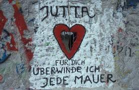
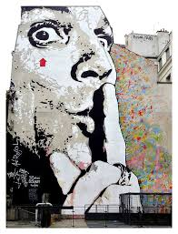

C'est principalement un art éphémère vu par un très grand public.
Cette dernière est source d’inspiration, scène, support, terrain et médium de leurs créations.
Pas de limites, pas d’autorisations, c’est ce qui fait l’originalité du street-art.
On peut situer l’origine du graffiti à la Grèce antique et à Pompei.

Néanmoins le mouvement se développe réellement dans les années 60 et 70 pour cause d’évènements importants.
Reichstag, guerre d’Algérie, Mai 68, mur de Berlin… ces évènements phares dans l’histoire vont inciter le développement de moyens d’expression dont le graffiti.
A la même époque nait aux Etats-Unis le graffiti moderne notamment à New York et Los Angeles,
parallèlement débute aussi la lutte anti-tag et l’émergence du hip-hop.
Les années 80 vont être marquées par l’arrivée du graffiti moderne New-yorkais à Londres, Paris, Amsterdam et Barcelone.
Emergence des peintres de rue non reconnu par le marché. En 1981, date clé, le centre Pompidou organise la première exposition sur le street art « Graffiti et société ».
Preuve que ce mouvement prend de l’importance.
Critiques d’art et marchands commencent à prendre très au sérieux le mouvement.
Plusieurs expositions seront organisées, non plus seulement dans les galeries mais aussi dans les musées. Aux Pays-Bas, les expositions au musée Boymans van Beungen en 1983 et au musée Groninger en 1992.
L’année 2008 a été marquée par deux temps fort pour l’art urbain.

Le 22 février 2008 le MAC de Lyon a proposé une exposition de l’artiste américain Keith Haring (1958-1990).
Personnalité issue de la culture underground new yorkaise, et qui a créé des personnages colorés aux formes simplifiées.
En Angleterre, du 23 mai au 25 août 2008, la Tate Modern proposait une exposition consacrée au Street Art. L’institution a laissé carte blanche à six artistes reconnus internationalement afin qu’ils créent des oeuvres sur la façade du bâtiment.
Les artistes choisis par la Tate Modern ont été Blu, JR, Faile, Sixeart, Os Gêmeos et Nunca.
Il s’agissait de la première exposition réunissant plusieurs acteurs du Street Art dans un grand musée de renommée internationale.
Aujourd’hui l’art urbain compte beaucoup de membres.
A côté des noms connus comme Banksy, Space Invader, Jonone, Speedy Graphito, Blek, Miss-Tic, Jef Aerosol, Epsylon Point, VLP,
il ne faut pas oublier ceux qui le font pour s’amuser, artistes d’un soir qui n’y reviendront plus,
mais qui adhèrent à ce mode d’expression artistique.